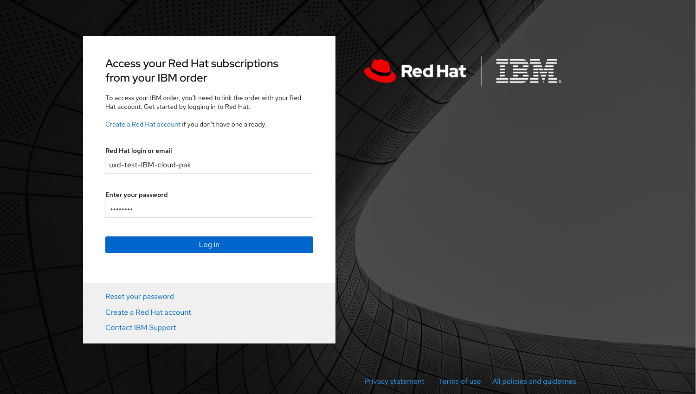
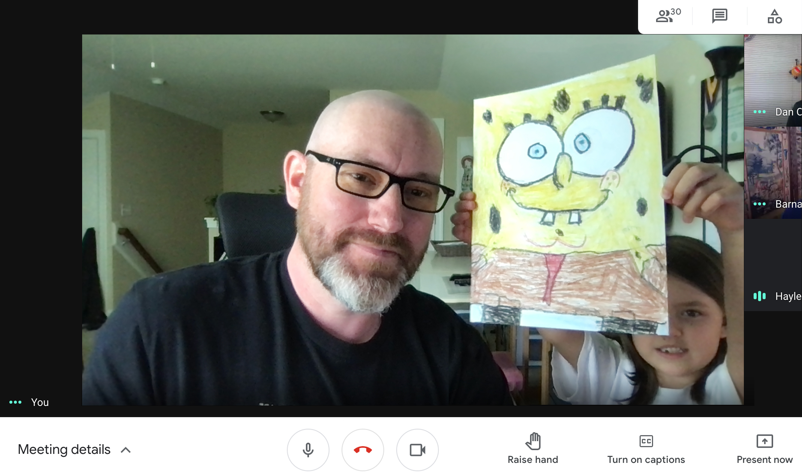
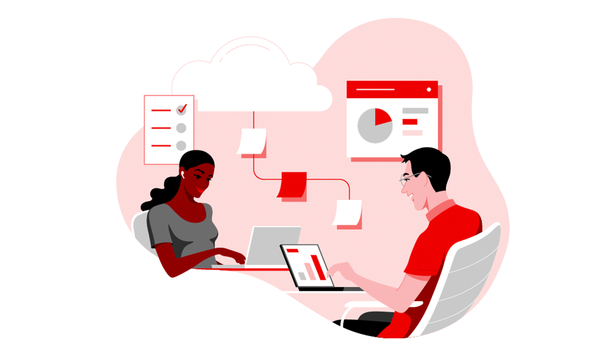

Designing Self-Service Entitlement Automation for IBM Cloud Paks
Designed a self-service entitlement system enabling customers to activate Red Hat subscriptions purchased through IBM Cloud Paks.
View Case StudyPrincipal UX Designer at Red Hat creating enterprise experiences that help customers navigate complexity with confidence.
For more than twenty years, I've designed customer-focused experiences spanning enterprise SaaS, customer portals, subscription management, identity systems, e-commerce, and service design.
View Work
Designed a self-service entitlement system enabling customers to activate Red Hat subscriptions purchased through IBM Cloud Paks.
View Case Study
Lessons learned from facilitating design collaboration while teams transitioned to fully remote work.
Read Article
How thoughtful language and UX design reduce friction during onboarding and account setup experiences.
Read Article